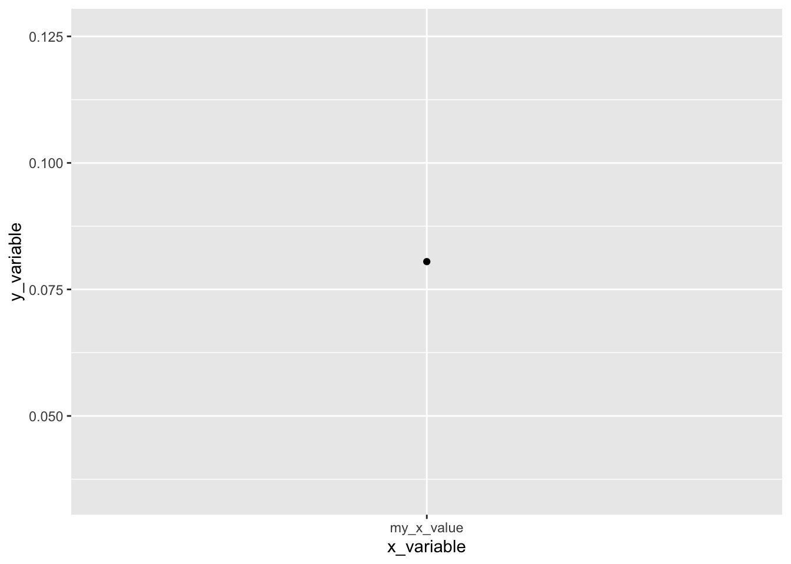

Problem Set 2. Experiments
Relevant material will be covered by Sep 11. Problem set is due Sep 19.
To complete the problem set, Download the .Rmd and complete the homework. Omit your name so we can have anonymous peer feedback. Compile to a PDF and submit the PDF on Canvas.
This problem set is based on:
Bertrand, M & Mullainathan, S. 2004. “Are Emily and Greg More Employable Than Lakisha and Jamal? A Field Experiment on Labor Market Discrimination.” American Economic Review 94(4):991–1013.
Here’s a heads-up about what will be hard in this problem set
- for some, reading a social science paper will be hard
- for some, mathematical statistics will be hard
- for some, R coding will be hard
For almost no one will all three be easy.
We want to support you to succeed! Text in this format is here to help you.
1. Conceptual questions about the study design
Read the first 10 pages of the paper (through the end of section 2).
1.1. (5 points) Fundamental Problem
One submitted resume had the name “Emily Baker.” It yielded a callback. The same resume could have had the name “Lakisha Washington,” and in that hypothetical world it would not have yielded a callback. Explain how the Fundamental Problem of Causal Inference applies to this case (1–2 sentences). Write out the potential outcomes using the notation we have described in class.
Answer. Your answer here
2. Analyzing the experimental data
Load packages that our code will use.
To complete the rest of this assignment, you will need to download the study’s data from OpenICPSR: https://www.openicpsr.org/openicpsr/project/116023/version/V1/view. This will require creating an account and agreeing to terms for using the data ethically. Put the data in the folder on your computer where this .Rmd is located. Read the data into R using read_dta.
d <- read_dta("assets/data/lakisha_aer.dta")If you have an error, you might need to set your working directory first. This tells R where to look for data files. In other words, your data file needs to be in the same folder as your homework file, AND RStudio needs to be told which folder to look at. At the top of RStudio, click Session -> Set Working Directory -> To Source File Location.
You will now see d in your Global Environment at the top right of RStudio.
We will use four variables:
| Name | Role | Values |
|---|---|---|
call |
outcome | 1 if resume submission yielded a callback |
| 0 if not | ||
firstname |
treatment | first name randomly assigned to resume |
race |
category of treatments |
b if first name signals Black |
w if first name signals white |
||
sex |
category of treatments |
f if first name signals female |
m if first name signals male |
For 2.1–2.4, we will think of race as the treatment. For 2.5–2.6, we will think of firstname as the treatment.
We can print the relevant variables in a table
## # A tibble: 4,870 × 4
## call firstname race sex
## <dbl> <chr> <chr> <chr>
## 1 0 Allison w f
## 2 0 Kristen w f
## 3 0 Lakisha b f
## 4 0 Latonya b f
## 5 0 Carrie w f
## 6 0 Jay w m
## 7 0 Jill w f
## 8 0 Kenya b f
## 9 0 Latonya b f
## 10 0 Tyrone b m
## # ℹ 4,860 more rowsIf you are new to R, here is what just happened:
- created a new object
d_selected- used the assignment operator
<-to put something in that object- we started with our data object
d- we used the pipe operator
%>%to handddown into a new action- the action
select()selected only the variables of interestWe will often analyze data by starting with a data object and handing that through a series of actions connected by the pipe
%>%
2.1. (5 points) Point estimates of expected potential outcomes
The top of Table 1 reports callback rates: 9.65% for white names and 6.45% for Black names. Reproduce those numbers. To do so, take the code below but add a group_by() action between d_selected and summarize.
Here’s a reference that introduces
group_byandsummarize.
Answer. Modify the code below
d_summarized <- d_selected %>%
summarize(callback_rate = mean(call),
number_cases = n()) %>%
print()## # A tibble: 1 × 2
## callback_rate number_cases
## <dbl> <int>
## 1 0.0805 48702.2. (5 points) Inference for expected potential outcomes
Use mutate() (see reference page) to create a new columns containing the standard error of each estimate as well as lower and upper limits of 95% confidence intervals.
Suppose \(\pi^a\) is the probability of a callback under treatment condition \(a\). Let \(\hat\pi^a\) be your estimate of that unknown probability, meaning that \(\hat\pi^a\) is the proportion of people in that treatment condition to receive a callback in the experiment (you computed this is 2.1). You are making a confidence interval on \(\hat\pi^a\), so your estimate is \(\hat\pi^a\) and your standard error is the standard error of \(\hat\pi^a\)
To make this easier, here is a quick math review and R functions you can use.
Standard error in math. Let \(Y^a\) be a Bernoulli random variable, taking the value 1 if a random resume with name \(a\) yields a callback and 0 otherwise. Let \(\pi^a = P(Y^a=1)\) be the probability of a callback. From statistics, you know this has variance \(V(Y^a) = \pi^a (1-\pi^a)\). We have estimated by an average: \(\hat\pi^a = \frac{1}{n_a}\sum_{i:A_i=a} Y_i^a\). If we did this many times in many hypothetical samples, we would not always get the same estimate. In fact, our estimate would have sampling variance \(V(\hat\pi^a) = \frac{\pi^a(1-\pi^a)}{n_a}\). We know this because \(\hat\pi^a\) is a mean of \(n_a\) independent and identically distributed random variables \(Y^a\). The standard error is the square root of the sampling variance: \(SE(\hat\pi^a) = \sqrt\frac{\pi^a(1-\pi^a)}{n_a}\). We can estimate this standard error by plugging in our estimate \(\hat\pi^a\) for the true unknown \(\pi^a\) wherever it appears.
Standard error in code. We translated the standard error formula into code for you below. This function accepts an estimated probability
pand sample sizenand returns the estimated standard error. You can use thisse_binary()function in your code withinmutate()just like howmean()was used withinsummarize()at the start of the problem set.
Sampling distribution in math. Because \(\hat\pi^a\) is a sample mean, we know something about its sampling distribution: in the limit as the sample size grows to infinity, across hypothetical repeated samples the distribution of \(\hat\pi^a\) estimates becomes Normal. This is by the Central Limit Theorem! Across repeated samples, the middle 95% of estimates will fall within a known range: \(\pi^a \pm \Phi^{-1}(.975) \times SE(\hat\pi^a)\), where \(\Phi^{-1}()\) is the inverse cumulative distribution function of the standard Normal distribution. You might have previously learned that \(\Phi^{-1}(.975) \approx 1.96\), so what might be familiar to you is the number 1.96.
Sampling distribution in a graph.

Confidence interval in math. We get a 95% confidence interval by plugging in the estimates \(\hat\pi^a\) and \(\widehat{SE}(\hat\pi^a)\) to the limits above. This interval is centered on the estimate \(\hat\pi^a\) and has a nice property: if we repeatedly made a confidence interval by this procedure using hypothetical samples from the population, our interval would contain the unknown true parameter \(\pi^a\) 95% of the time.
Confidence interval in code. We translated the confidence interval formula into code for you below. These functions accept an estimate and standard error and return the lower and upper bounds (respectively) of a 95% confidence interval that assumes a Normal sampling distribution. You can use these functions in your code within
mutate()just like howmean()was used withinsummarize()at the start of the problem set.
2.3. (5 points) Interpret your confidence interval
In words, interpret the confidence intervals. Be sure to discuss what their property is over hypothetical repeated samples, and be sure to frame your answer using the numbers and variables from the actual experiment we are analyzing.
Answer. Your answer here
2.4. (5 points) Visualize expected potential outcomes
Using ggplot(), visualize the estimated callback rate by race. Use geom_point() for point estimates and geom_errorbar() for confidence intervals, with race on the x axis and estimates on the y axis. Label the axes using full words.
If you have never used
ggplot, see Ch 3 of R for Data Science by Hadley Wickham.
Answer. Your answer here
2.5. (5 points) Estimate and visualize by firstname
Do distinct first names yield distinct effects? Repeat the coding steps from 2.2–2.4, but now create estimates grouped by race, sex, and firstname. Visualize point estimates and confidence intervals.
One way to visualize is by placing first names on the \(x\)-axis and using a
facet_wrap()layer to facet over race and sex.
your_ggplot +
facet_wrap(~ race + sex,
scales = "free_x",
nrow = 1)Any strategy to visualize is fine, as long as it shows estimates for each
firstnameand indicates theraceandsexsignaled by thatfirstnameUp through 2.4, you were making two estimates: one for white and one for Black. In 2.5, you are aggregating within a more fine-grained set of groups defined by race, sex, and firstname. So you will need to start fresh from the raw person-level data in order to answer 2.5
Answer. Your answer here
2.6. (5 points) Interpret
Within race and sex, not all first names have the same effect. Suppose these are true differences (not due to sampling variability). What does this tell you about the importance of researcher decisions about which names to use as treatments? There are many possible right answers, and here we are asking you to think about what it might mean for research design that the names have different effects.
Answer. Your answer here
2.7. (5 points) Treatment effect heterogeneity
To simplify these next few questions, we will define the treatment as the race coded by the first name instead of the first name itself. The researchers conducted this study in Boston and Chicago. There are many ways that the two cities differ and we might expect that the causal effect of race might be heterogeneous across cities. Similar to above, calculate the callback rate by race and city by placing a group_by() action between d and summarize.
Answer. Modify the code below
## # A tibble: 1 × 2
## callback_rate number_cases
## <dbl> <int>
## 1 0.0805 48702.8. (5 points) Transportability
One reason the causal effect may differ across cities is that the proportion of industries varies across cities and the causal effect may differ across industries. The code below first creates an industry variable and looks at the proportion of industries for each city. Specifically, by using filter(city == "b") and filter(city == "c") we can only use rows which correspond to Boston and Chicago respectively.
# Currently the industries for each firm is encoded across 7 different columns;
# i.e., a 1 in manuf and 0 in the other columns indicates a firm is in manufacturing.
# So, we first create an additional variable in d which explicitly states the industry
industry_list <- c("manuf", "transcom", "bankreal", "trade", "busservice", "otherservice", "other")
d <- d %>% mutate(industry = industry_list[max.col(cbind(manuf, transcom, bankreal, trade, busservice, othservice, missind))])
## Proportions for Boston
# By using filter(city == "b) we are only including rows
# for which city == b; i.e. when the city is boston
d %>% filter(city == "b") %>%
group_by(industry) %>% summarise(freq = n()) %>% # first get the number of times each industry appears and put that in the freq variable
mutate(percent = freq / sum(freq)) %>% # using the frequency calculate the proportions
select(-freq) %>% # don't print the freq column
print(n = Inf)## # A tibble: 7 × 2
## industry percent
## <chr> <dbl>
## 1 bankreal 0.0480
## 2 busservice 0.259
## 3 manuf 0.0896
## 4 other 0.193
## 5 otherservice 0.117
## 6 trade 0.249
## 7 transcom 0.0443
## Proportions for Chicago
# By using filter(city == "b) we are only including rows
# for which city == b; i.e. when the city is boston
d %>% filter(city == "c") %>% group_by(industry) %>%
summarise(freq = n()) %>%
mutate(percent = freq / sum(freq)) %>% select(-freq) %>%
print(n = Inf)## # A tibble: 7 × 2
## industry percent
## <chr> <dbl>
## 1 bankreal 0.115
## 2 busservice 0.275
## 3 manuf 0.0777
## 4 other 0.143
## 5 otherservice 0.185
## 6 trade 0.186
## 7 transcom 0.0192Suppose the researchers had first conducted a pilot study in Boston only. The code below calculates an estimated conditional ACE for each industry using data from Boston. Assuming that the conditional causal effect for each industry is the same in Boston as it is in Chicago, what would you estimate for the average causal effect of race on callback rates in Chicago is? To receive full points, you should include the code for how you calculated the answer.
# Table with callback rates by industry and race for Boston
d %>% filter(city == "b") %>%
group_by(industry, race) %>%
summarize(callback_rate = mean(call)) %>%
print()## `summarise()` has grouped output by 'industry'. You can
## override using the `.groups` argument.## # A tibble: 14 × 3
## # Groups: industry [7]
## industry race callback_rate
## <chr> <chr> <dbl>
## 1 bankreal b 0.0385
## 2 bankreal w 0.154
## 3 busservice b 0.0821
## 4 busservice w 0.136
## 5 manuf b 0.0103
## 6 manuf w 0.0928
## 7 other b 0.0861
## 8 other w 0.105
## 9 otherservice b 0.165
## 10 otherservice w 0.173
## 11 trade b 0.0519
## 12 trade w 0.0778
## 13 transcom b 0.104
## 14 transcom w 0.125
# Table with same information as above, but rearranged so that callback rates by each race is it's own column
d %>% filter(city == "b") %>%
group_by(industry, race) %>%
summarize(callback_rate = mean(call)) %>%
pivot_wider(names_from = race, values_from = callback_rate) %>% # puts the each race into its own column
mutate(diff = w - b) %>% # calculates the difference
print()## `summarise()` has grouped output by 'industry'. You can
## override using the `.groups` argument.## # A tibble: 7 × 4
## # Groups: industry [7]
## industry b w diff
## <chr> <dbl> <dbl> <dbl>
## 1 bankreal 0.0385 0.154 0.115
## 2 busservice 0.0821 0.136 0.0536
## 3 manuf 0.0103 0.0928 0.0825
## 4 other 0.0861 0.105 0.0191
## 5 otherservice 0.165 0.173 0.00787
## 6 trade 0.0519 0.0778 0.0259
## 7 transcom 0.104 0.125 0.0208}
Answer. Your answer here